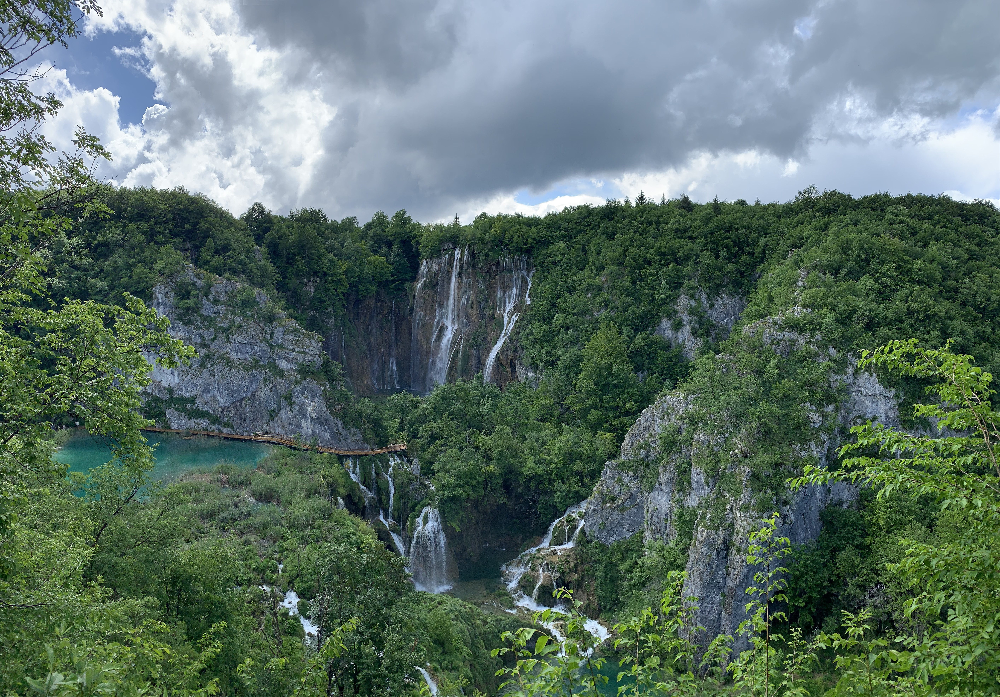
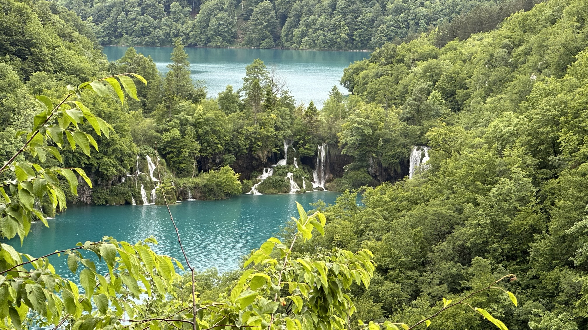
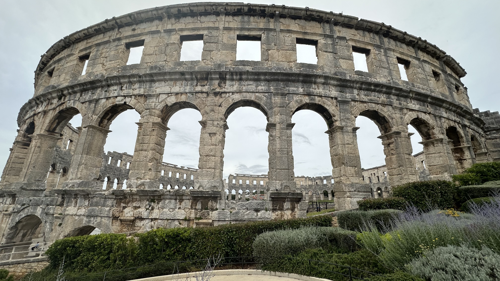
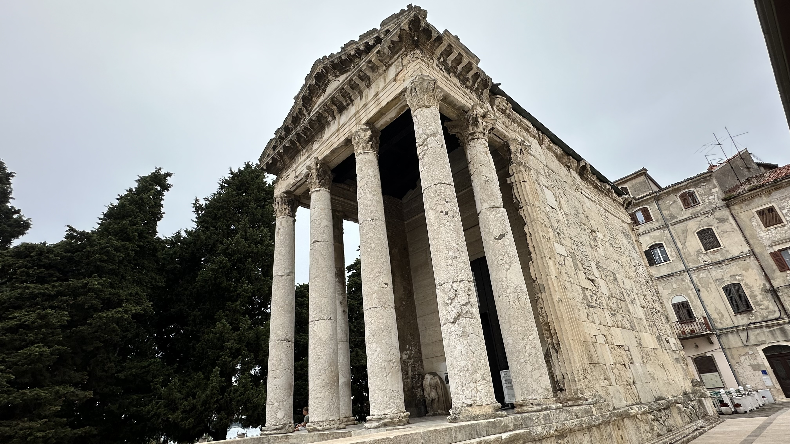

16. - 17. Mai: Anreise via Österreich
Hotel Post, Rennweg am Katschberg
- Anfahrt über Heilbronn, Stuttgart, Muenchen, Berchtesgaden, Salzburg
- Ankunft im Regen gegen 19:00 Uhr
- Kleines, schönes Zimmer im Hotel Post
- Abendessen in der Gaststube "gutbürgerlich": Salat, Cordon Bleu, Steak mit Pfeffersauce
Hotel Teatro Verdi Boutique, Zadar
- Frühstueck mit Cappuccino und österreichischem Kaese (Jerome, gibts nur in dieser Gegend)
- Mautstelle am Grenztunnel - Fahrt durch Slowenien
- Küstenfahrt ab Senj (Adriaküste) - malerisch und schön
- Zadar, Hotel Teatro Verdi: klein, schön, zentrale Lage am Hafen
- Restaurant Kornat: gute Fischgerichte
30. Mai - 3. Juni: Plitvice & Zentrale Regionen
- Zrinka House (private Unterkunft): Süddalmatien, großzügiges Zimmer mit Balkon
- Bewirtung mit Saft und Schoko-Kuchen bei Ankunft
- Restaurant House Tina: Grillteller - Fleisch & Tintenfisch mit Grillgemüse, Pommes, Salat

Plitvice - Grosse Wasserfallkaskade

Plitvicer-Seen - Kaskaden
- Nationalpark Plitvicer-Seen: 16 verbundene Seen mit spektakulären Wasserfällen
- Wanderroute E: 6,5 km um obere Seen, Schiffstransfer, Unimog-Bus zurück
- Rastplatz mit Picknick (selbst zubereitete Brote)
- Untere Seen: 2 km, Wechsel zwischen Regen & Sonnenschein
- Wanderschuhe + Regenjacke essentiell
- Restaurant Degenija: Pizza, gegrillte Calamari mit Salzkartoffeln & Mangold, viel Knoblauch, lokales alkoholfreies Bier
- Zrinka House: Radler zum Abschluss

Pula - Römisches Amphitheater (2000 Jahre alt)
- Zwischenhalt Hum: Kleinste Stadt Europas mit Stadtmauer - ca. 20 Einwohner
- Schmale einspurige Landstraß, kleine Läden, Apartments, Kirche
- Parkgebuehr: 3 Euro auf Schotter
- Pula - Römisches Amphitheater: Stein überwiegend original aus dem 1. Jahrhundert (2000 Jahre alt)
- Kastell: Über Steintreppe erreichbar, Turm mit Aussicht auf Pula
- Zerostrasse: Sternförmiges Schutzraumsystem unter der Stadt (1. & 2. Weltkrieg)

Pula - Augustustempel (römisch)
- Römisches Mosaik: In Hauseingängen, schwer zu finden
- Augustustempel & Dom Maria Himmelfahrt: Religiöse Bauwerke (Dom geschlossen)
- Hotel Park Plaza: Modern, schönes Zimmer, Felsenstrand, Bar auf Terrasse
- Abendessen Büffet im Hotel
- Frühstueck Büffet: große Auswahl
- Abendessen Büffet: verschiedene Variationen
- Ausflug zum Meer
Zusammenfassung
Hotels & Unterkünfte:
Hotel Post, Rennweg am Katschberg | Hotel Teatro Verdi Boutique, Zadar | Lanterna Rooms, Split | Hotel Villa Nora, Hvar | Hotel Maritimo, Makarska | Zrinka House (Privatunterkunft), Süddalmatien | Park Plaza, Pula | Hotel Spirito Santo Rovinj
Highlights:
Dalmatische Adriaküste mit historischen Häfen (Zadar, Split, Dubrovnik) | Römische Bauwerke (Diokletians-Palast, Amphitheater Pula) | Naturschutzgebiete (Krka, Plitvice, Biokovo mit Skywalk) | Bootsausflüge zu Grotten (Grüne & Blaue Grotte bei Hvar) | Mittelalterliche Städtchen (Hum, Motovun) | Tropfsteinhöhle (Baredine) | Restaurantkultur mit Fisch- & Fleischspezialitaeten